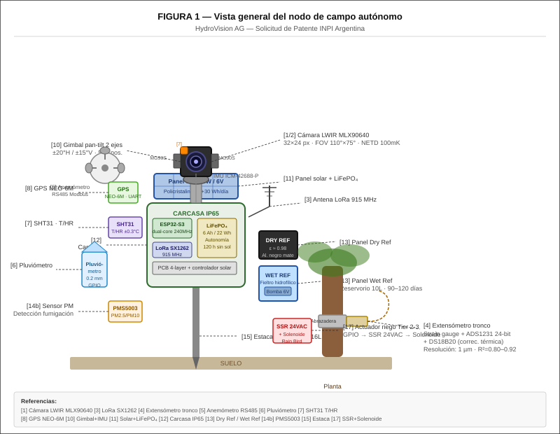
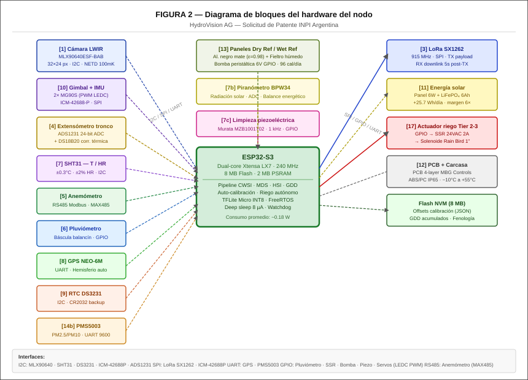
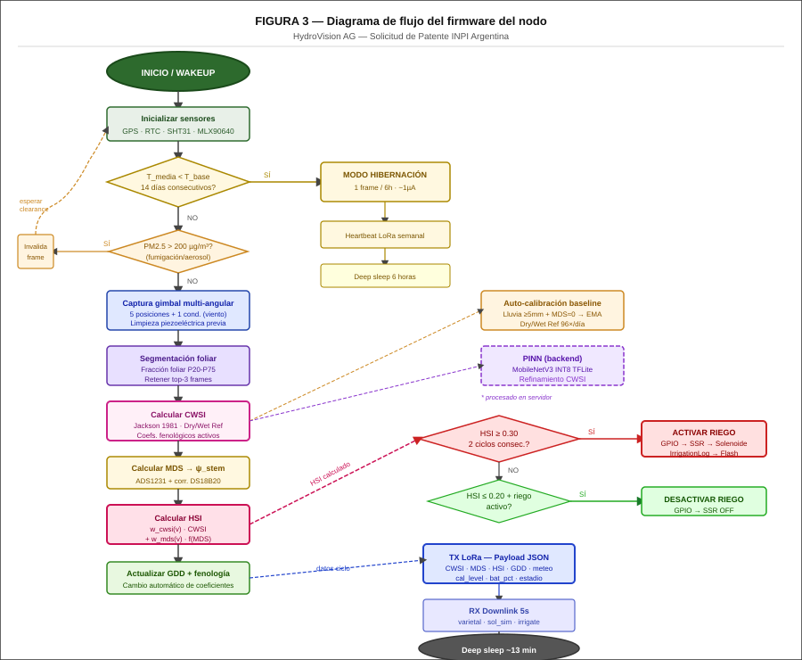
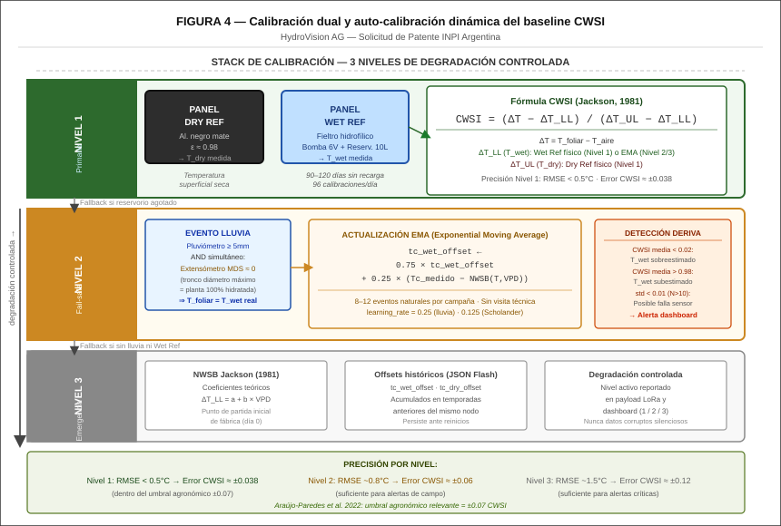
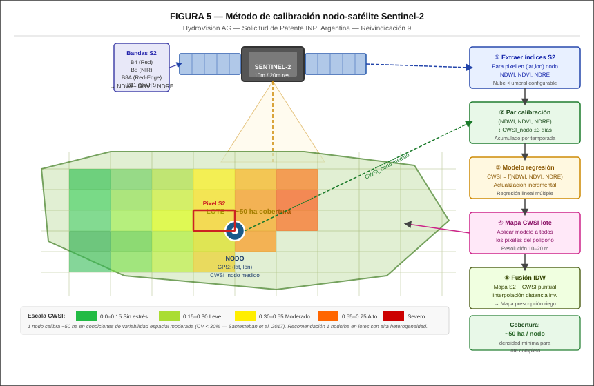
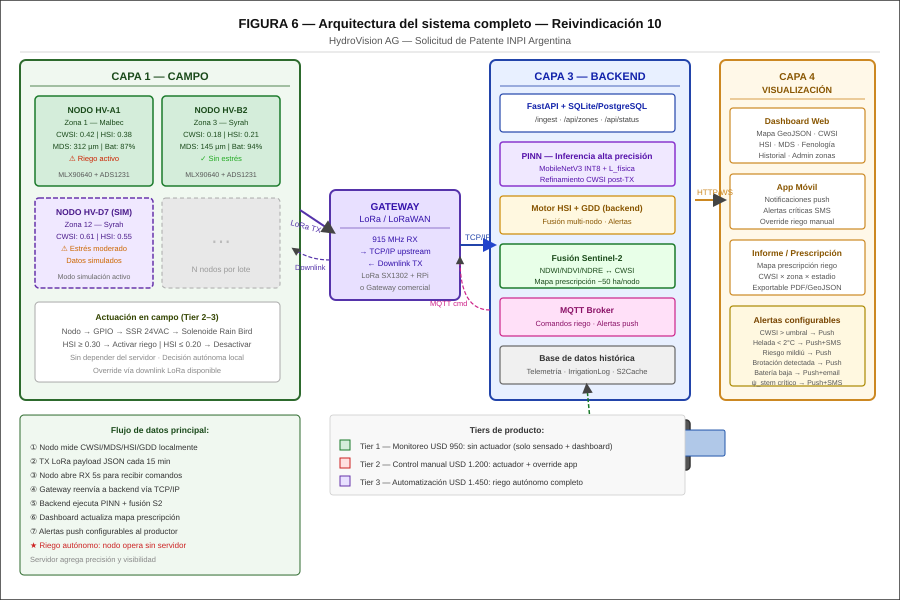

FIGURA 1 — Vista general del nodo de campo autónomo

Referencia: Reivindicación 1 (aparato) — componentes [1]–[17]
FIGURA 2 — Diagrama de bloques del hardware del nodo

Referencia: Reivindicación 1 — interfaces I2C / SPI / UART / GPIO / RS485
FIGURA 3 — Diagrama de flujo del firmware

Referencia: Reivindicaciones 2 (HSI+viento), 3 (GDD/fenología), 4 (auto-calibración), 5 (riego autónomo)
FIGURA 4 — Calibración dual y auto-calibración dinámica del baseline CWSI

Referencia: Reivindicación 4 — Stack triple nivel de calibración con degradación controlada
FIGURA 5 — Método de calibración nodo-satélite Sentinel-2

Referencia: Reivindicación 9 (método independiente) — ~50 ha cobertura por nodo
FIGURA 6 — Arquitectura del sistema completo

Referencia: Reivindicación 10 (sistema) — Capas 1–4: Campo → Gateway → Backend → Dashboard
Generado: 2026-04-08 | HydroVision AG S.A.S. | Confidencial — Material de solicitud de patente